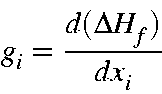
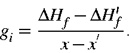

Gradients
By "gradients" we generally mean "the derivative of the energy with respect to coordinates". The two most commonly used gradients are with respect to Cartesian coordinates, in which case the units are kcal/mol/Ångstrom, or with respect to internal coordinates, in which case the units are either kcal/mol/Ångstrom or kcal/mol/radian, depending on whether the coordinate is a distance (in which case it would be kcal/mol/Ångstrom) or an angle or dihedral (in which case it would be kcal/mol/radian). The particular gradient actually being used at any given point should be clear from the context. In all cases, the gradient can be regarded as the following derivative

In discussion "gradient" will be reserved for the derivative with respect to coordinates flagged for optimization (internal or Cartesian), and "derivative" will be used for both gradients and terms which are used to calculate gradients, such as Cartesian derivatives which are used to calculate internal coordinate gradients.
There are four very different ways to calculate gradients, although all four result in the same type of derivative. The four ways are:
- Frozen density matrix finite difference derivatives
In these procedures, once an SCF has been achieved, the derivatives can be calculated using the density matrix from the SCF calculation. These methods can only be used with variationally optimized wavefunctions.
Analytical derivatives, using frozen density matrix approximation
Not as fast as the first method, but more accurate. Useful when finite difference derivatives are suspected to be of insufficient accuracy. When analytical derivatives are wanted, specify ANALYT. Analytical derivatives cannot be used with non-variational finite difference derivatives.
Non-variational finite difference derivatives
For non-variational wavefunctions (systems for which the electronic energy is modified after the SCF calculation is done, e.g. C.I. calculations), a sophisticated derivative routine in DERNVO calculates the effect on the derivative of the post-SCF energy terms. This method is used automatically in RHF C.I. calculations. If this method is not wanted, specify
NOANCI.
Brute force gradients
These should be avoided whenever possible. To calculate the gradient, a small change is made in the desired coordinate, then a full SCF is done, and the gradient calculated from

These gradients are very slow, and are of poor accuracy, but sometimes they are the only way to obtain gradients. These derivatives cannot be used with variationally optimized wavefunctions, but can be used with non-variational wavefunctions by specifying NOANCI.
Note that ANALYT and NOANCI apply to two very different things: ANALYT applies to the derivatives using a frozen density matrix approximation, and uses true analytical methods. NOANCI prevents Liotard's C.I. derivative method being used. Of course NOANCI has no meaning for variationally optimized wavefunctions.